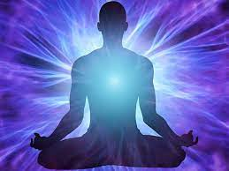
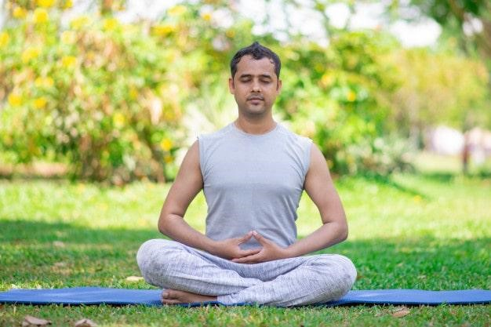
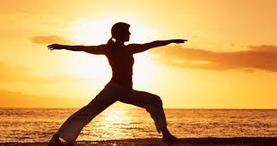
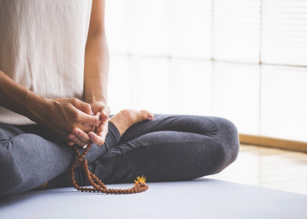
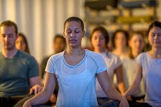
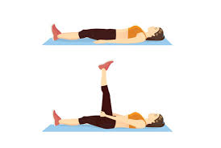
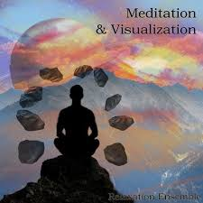

1.Mindfulness meditation

Mindfulness meditation originates from Buddhist teachings and is the most popular and researched form of meditation in the West. In mindfulness meditation, you pay attention to your thoughts as they pass through your mind. You don’ t judge the thoughts or become involved with them. You simply observe and take note of any patterns. This practice combines concentration with awareness. You may find it helpful to focus on an object or your breath while you observe any bodily sensations, thoughts, or feelings. This type of meditation is good for people who don’ t have a teacher to guide them, as it can be easily practiced alone.
2. Spiritual meditation
Spiritual meditation is used in nearly all religions and spiritual traditions. The types of spiritual meditation are as diverse as the world’s spiritual traditions themselves. Many of the meditation techniques listed in this article could be considered spiritual meditation. According to a 2017 study Trusted Source, spiritual meditation focuses on developing a deeper understanding of spiritual/religious meaning and connection with a higher power. Examples include: Christian contemplative prayer Sufi dhikr (remembrance of God) Jewish kabbalistic practices Spiritual meditation can be practiced at home or in a place of worship. This practice is beneficial for those who seek spiritual growth and a deeper connection to a higher power or spiritual force.
3.Focused meditation
Focused meditation involves concentration using any of the five senses. For example, you can focus on something internal, like your breath, or you can bring in external influences to help focus your attention. Examples include: counting mala beads listening to a gong staring at a candle flame counting your breaths moon gazing This practice may be simple in theory, but it can be difficult for beginners to hold their focus for longer than a few minutes at first. If your mind does wander, simply come back to the practice and refocus. As the name suggests, this practice is ideal for anyone who wants to sharpen their focus and attention.
4. Movement meditation
Although most people think of yoga when they hear movement meditation, this practice may include: walking gardening qi gong tai chi other gentle forms of movement This is an active form of meditation where the movement guides you into a deeper connection with your body and the present moment. Movement meditation is good for people who find peace in action and want to develop body awareness.
5. Mantra meditation
Mantra meditation is prominent in many teachings, including Hindu and Buddhist traditions. This type of meditation uses a repetitive sound to clear the mind. It can be a word, phrase, or sound, one of the most common being “om.” Your mantra can be spoken loudly or quietly. After chanting the mantra for some time, you’ll be more alert and in tune with your environment. This allows you to experience deeper levels of awareness. Some people enjoy mantra meditation because they find it easier to focus on a word than on their breath. Others enjoy feeling the vibration of the sound in their body. This is also a good practice for people who don’t like silence and enjoy repetition.
6. Transcendental Meditation
Transcendental Meditation (TM) is a type of meditation that’s been the subject of numerous studies in the scientific community. TM was founded by Maharishi Mahesh Yogi and refers to a specific practice designed to quiet the mind and induce a state of calm and peace. It involves the use of mantra and is best taught by a certified TM practitioner. This practice is for those who want an accessible approach to the depth that meditation offers
7. Progressive relaxation
Also known as body scan meditation, progressive relaxation is a practice aimed at reducing tension in the body and promoting relaxation. Oftentimes, this form of meditation involves slowly tightening and relaxing one muscle group at a time throughout the body. In some cases, it may also encourage you to imagine a gentle wave flowing through your body to help release any tension. This form of meditation is often used to relieve stress and unwind before bedtime.
8. Loving-kindness meditation
Loving-kindness meditation is used to strengthen feelings of compassion, kindness, and acceptance toward oneself and others. It typically involves opening the mind to receive love from others and then sending well wishes to love ones, friends, acquaintances, and all living beings. Because this type of meditation is intended to promote compassion and kindness, it may be ideal for those holding feelings of anger or resentment.
9. Visualization meditation
Visualization meditation is a technique focused on enhancing feelings of relaxation, peace, and calmness by visualizing positive scenes, images, or figures. This practice involves imagining a scene vividly and using all five senses to add as much detail as possible. It can also involve holding a beloved or honored figure in mind with the intention of embodying their qualities. Another form of visualization meditation involves imagining yourself succeeding at specific goals, which is intended to increase focus and motivation. Many people use visualization meditation to boost their mood, reduce stress levels, and promote inner peace.
Why meditation is beneficial
There’s plenty of evidence supporting the numerous benefits of meditation. Meditation can offer general health and mental/emotional benefits, including: lower blood pressure reduced stress better sleep improved emotional regulation increased focus enhanced mood reduced aggression greater adaptability healthier aging process a greater sense of empathy and connection with others Meditation may also help with symptoms of specific conditions, including: depression and anxiety disorders cardiovascular disease, such as arterial hypertension Trusted Source dementia and Alzheimer’s disease Trusted Source Parkinson’s disease insomnia attention deficit hyperactivity disorder (ADHD) chronic pain